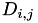
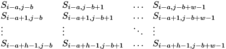

|
NVIDIA 2D Image And Signal Performance Primitives (NPP)
Version 11.3.0.*
|
|
NVIDIA 2D Image And Signal Performance Primitives (NPP)
Version 11.3.0.*
|
Image processing related functions use a number of suffixes to indicate various different flavors of a primitive beyond just different data types. The flavor suffix uses the following abbreviations:
pSrcDst to indicate that the image data serves as source and destination at the same time.The suffixes above always appear in alphabetical order. E.g. a 4 channel primitive not affecting the alpha channel with masked operation, in place and with scaling/saturation and ROI would have the postfix: "AC4IMRSfs".
Image data is passed to and from NPPI primitives via a pair of parameters:
The general idea behind this fairly low-level way of passing image data is ease-of-adoption into existing software projects:
The line step (also called "line stride" or "row step") allows lines of oddly sized images to start on well-aligned addresses by adding a number of unused bytes at the ends of the lines. This type of line padding has been common practice in digital image processing for a long time and is not particular to GPU image processing.
The line step is the number of bytes in a line including the padding. An other way to interpret this number is to say that it is the number of bytes between the first pixels of successive rows in the image, or generally the number of bytes between two neighboring pixels in any column of pixels.
The general reason for the existence of the line step it is that uniformly aligned rows of pixel enable optimizations of memory-access patterns.
Even though all functions in NPP will work with arbitrarily aligned images, best performance can only be achieved with well aligned image data. Any image data allocated with the NPP image allocators or the 2D memory allocators in the CUDA runtime, is well aligned.
Particularly on older CUDA capable GPUs it is likely that the performance decrease for misaligned data is substantial (orders of magnitude).
All image data passed to NPPI primitives requires a line step to be provided. It is important to keep in mind that this line step is always specified in terms of bytes, not pixels.
There are three general cases of image-data passing throughout NPP detailed in the following sections.
Those are images consumed by the algorithm.
The source image data is generally passed via a pointer named
The source image pointer is generally defined constant, enforcing that the primitive does not change any image data pointed to by that pointer. E.g.
In case the primitive consumes multiple images as inputs the source pointers are numbered like this:
The batch of source images data is generally passed via a pointer of NppiImageDescriptor type named
The source batch pointer is generally defined constant, enforcing that the primitive does not change any source data pointed to by that pointer. E.g.
All primitives processing batch data require providing the size of the batch in a separate parameter.
The planar source image data is generally passed via an array of pointers named
The planar source image pointer array is generally defined a constant array of constant pointers, enforcing that the primitive does not change any image data pointed to by those pointers. E.g.
Each pointer in the array points to a different image plane.
The multiple plane source image data is passed via a set of pointers named
The planar source image pointer is generally defined as one of a set of constant pointers with each pointer pointing to a different input image plane.
The source image line step is the number of bytes between successive rows in the image. The source image line step parameter is
or in the case of multiple source images
The source planar image line step array is an array where each element of the array contains the number of bytes between successive rows for a particular plane in the input image. The source planar image line step array parameter is
The source planar image line step is the number of bytes between successive rows in a particular plane of the multiplane input image. The source planar image line step parameter is
Those are images produced by the algorithm.
The destination image data is generally passed via a pointer named
In case the primitive generates multiple images as outputs the destination pointers are numbered like this:
The batch of destination images data is generally passed via a pointer of NppiImageDescriptor type named
All primitives processing batch data require providing the size of the batch in a separate parameter.
The planar destination image data pointers are generally passed via an array of pointers named
Each pointer in the array points to a different image plane.
The destination planar image data is generally passed via a pointer to each plane of a multiplane output image named
The destination image line step parameter is
or in the case of multiple destination images
The destination planar image line step array is an array where each element of the array contains the number of bytes between successive rows for a particular plane in the output image. The destination planar image line step array parameter is
The destination planar image line step is the number of bytes between successive rows for a particular plane in a multiplane output image. The destination planar image line step parameter is
In the case of in-place processing, source and destination are served by the same pointer and thus pointers to in-place image data are called:
The in-place line step parameter is
Some image processing primitives have variants supporting Masked Operation.
The mask-image data is generally passed via a pointer named
The mask-image line step parameter is
Some image processing primitives support Channel-of-Interest API.
The channel-of-interest data is generally an integer (either 1, 2, or 3):
NPP requires pixel data to adhere to certain alignment constraints.
For 2 and 4 channel images the following alignment requirement holds:
E.g. a 4 channel image with underlying type Npp8u (8-bit unsigned) would require all pixels to fall on addresses that are multiples of 4 (4 channels * 1 byte size).
As a logical consequence of all pixels being aligned to their natural size the image line steps of 2 and 4 channel images also need to be multiples of the pixel size.
For 1 and 3 channel images only require that pixel pointers are aligned to the underlying data type, i.e. pData % sizof(data type) == 0. And consequentially line steps are also held to this requirement.
All NPPI primitives operating on image data validate the image-data pointer for proper alignment and test that the point is not null. They also validate the line stride for proper alignment and guard against the step being less or equal to 0. Failed validation results in one of the following error codes being returned and the primitive not being executed:
In practice processing a rectangular sub-region of an image is often more common than processing complete images. The vast majority of NPP's image-processing primitives allow for processing of such sub regions also referred to as regions-of-interest or ROIs.
All primitives supporting ROI processing are marked by a "R" in their name suffix. In most cases the ROI is passed as a single NppiSize struct, which provides the width and height of the ROI. This raises the question how the primitive knows where in the image this rectangle of (width, height) is located. The "start pixel" of the ROI is implicitly given by the image-data pointer. I.e. instead of explicitly passing a pixel coordinate for the upper-left corner (lowest memory address), the user simply offsets the image-data pointers to point to the first pixel of the ROI.
In practice this means that for an image (pSrc, nSrcStep) and the start-pixel of the ROI being at location (x, y), one would pass
as the image-data source to the primitive. PixelSize is typically computed as
E.g. for a pimitive like nppiSet_16s_C4R() we would have
All NPPI primitives operating on ROIs of image data validate the ROI size and image's step size. Failed validation results in one of the following error codes being returned and the primitive not being executed:
(widthROI * PixelSize) > nLinStep indicates an error.Some primitive support masked operation. An "M" in the suffix of those variants indicates masked operation. Primitives supporting masked operation consume an additional input image provided via a Mask-Image Pointer and Mask-Image Line Step. The mask image is interpreted by these primitives as a boolean image. The values of type Npp8u are interpreted as boolean values where a values of 0 indicates false, any non-zero values true.
Unless otherwise indicated the operation is only performed on pixels where its spatially corresponding mask pixel is true (non-zero). E.g. a masked copy operation would only copy those pixels in the ROI that have corresponding non-zero mask pixels.
Some primitives allow restricting operations to a single channel of interest within a multi-channel image. These primitives are suffixed with the letter "C" (after the channel information, e.g. nppiCopy_8u_C3CR()). The channel-of-interest is generally selected by offsetting the image-data pointer to point directly to the channel- of-interest rather than the base of the first pixel in the ROI. Some primitives also explicitly specify the selected channel number and pass it via an integer, e.g. nppiMean_StdDev_8u_C3CR().
This is a pointer to the channel-of-interest within the first pixel of the source image. E.g. if pSrc is the pointer to the first pixel inside the ROI of a three channel image. Using the appropriate select-channel copy primitive one could copy the second channel of this source image into the first channel of a destination image given by pDst by offsetting the pointer by one:
Some primitives allow the user to select the channel-of-interest by specifying the channel number (nCOI). This approach is typically used in the image statistical functions. For example,
The channel-of-interest number can be either 1, 2, or 3.
This is a pointer to the channel-of-interest within the first pixel of the destination image. E.g. if pDst is the pointer to the first pixel inside the ROI of a three channel image. Using the appropriate select-channel copy primitive one could copy data into the second channel of this destination image from the first channel of a source image given by pSrc by offsetting the destination pointer by one:
A large number of NPP image-processing functions consume at least one source image and produce an output image (e.g. nppiAddC_8u_C1RSfs() or nppiFilterBox_8u_C1R()). All NPP functions falling into this category also operate on ROIs (see Region-of-Interest (ROI)) which for these functions should be considered to describe the destination ROI. In other words the ROI describes a rectangular region in the destination image and all pixels inside of this region are being written by the function in question.
In order to use such functions successfully it is important to understand how the user defined destination ROI affects which pixels in the input image(s) are being read by the algorithms. To simplify the discussion of ROI propagation (i.e. given a destination ROI, what are the ROIs in in the source(s)), it makes sense to distinguish two major cases:
As mentioned above, point-wise operations consume a single pixel from the input image (or a single pixel from each input image, if the operation in question has more than one input image) in order to produce a single output pixel.
In the case of neighborhood operations a number of input pixels (a "neighborhood" of pixels) is read in the input image (or images) in order to compute a single output pixel. All of the functions for Filtering Functions and Morphological Operations are neighborhood operations.
Most of these functions have parameters that affect the size and relative location of the neighborhood: a mask-size structure and an achor-point structure. Both parameters are described in more detail in the next subsections.
Many NPP neighborhood operations allow the user to specify the size of the neighborhood via a parameter usually named oMaskSize of type NppiSize. In those cases the neighborhood of pixels read from the source(s) is exactly the size of the mask. Assuming the mask is anchored at location (0, 0) (see Anchor-Point Parameter below) and has a size of (w, h), i.e.
a neighborhood operation would read the following source pixels in order to compute destination pixel :
Many NPP primitives performing neighborhood operations allow the user to specify the relative location of the neighborhood via a parameter usually named oAnchor of type NppiPoint. Using the anchor a developer can chose the position of the mask (see Mask-Size Parameter) relative to current pixel index.
Using the same example as in Mask-Size Parameter, but this time with an anchor position of (a, b):
the following pixels from the source image would be read:

NPP primitives in general and NPP neighborhood operations in particular require that all pixel locations read and written are valid and within the boundaries of the respective images. Sampling outside of the defined image data regions results in undefined behavior and may lead to system instability.
This poses a problem in practice: when processing full-size images one cannot choose the destination ROI to be the same size as the source image. Because neighborhood operations read pixels from an enlarged source ROI, the destination ROI must be shrunk so that the expanded source ROI does not exceed the source image's size.
For cases where this "shrinking" of the destination image size is unacceptable, NPP provides a set of border-expanding Copy primitives. E.g. nppiCopyConstBorder_8u_C1R(), nppiCopyReplicateBorder_8u_C1R() and nppiCopyWrapBorder_8u_C1R(). The user can use these primitives to "expand" the source image's size using one of the three expansion modes. The expanded image can then be safely passed to a neighborhood operation producing a full-size result.